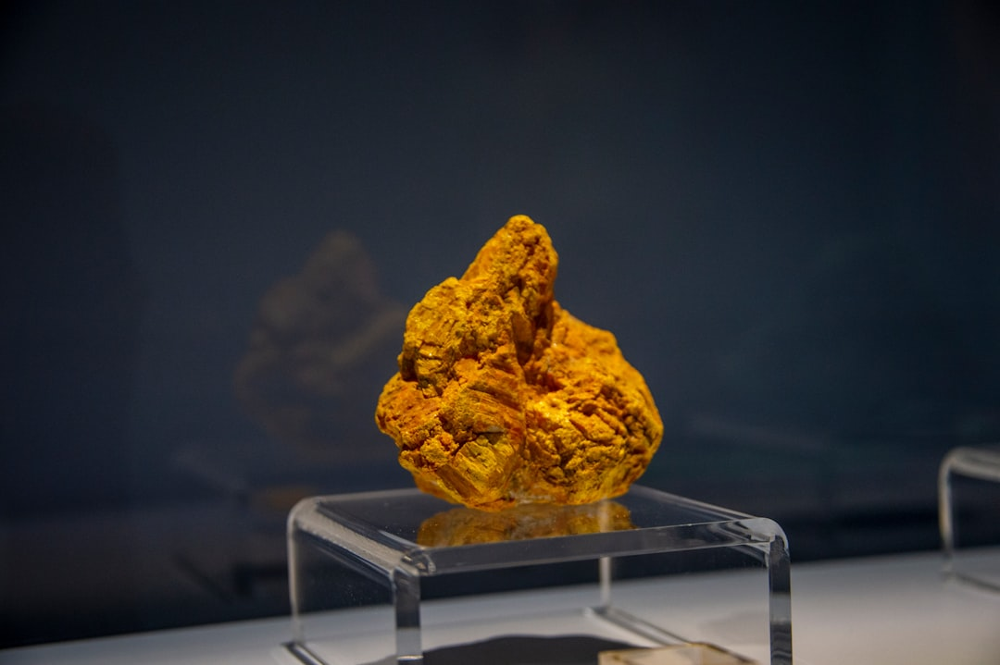

고려아연 게르마늄, 2027년 국산화 현실로…중국 공백 실제 메꿀 수 있나

중국은 2023년 8월 갈륨·게르마늄 수출통제를 시행한 이후 현재까지 게르마늄에 대한 봉쇄를 유지하고 있다. 반면 갈륨은 4개월 간의 봉쇄 끝에 일본을 대상으로 수출을 재개했다. 두 소재의 처리 방식이 갈라진 것은 '선별 무기화' 전략이 2단계로 진화했음을 의미한다.
게르마늄 국제 현물 가격은 2023년 7월 통제 직전 ㎏당 약 800달러 수준에서 현재 2,300~2,500달러 구간을 형성, 약 3배 이상 높은 수준을 유지하고 있다. 광통신 소재와 방산 적외선 광학 렌즈용 게르마늄 수급이 가장 직접적인 영향권에 있으며, 한국 내 연간 수요 추정치는 약 30~40t 수준이다.
고려아연은 아연 제련 공정 부산물에서 게르마늄을 회수하는 독립 공급망 구축을 추진 중이며, 미국 파트너십을 결합한 공정 설계가 진행되고 있다. 회사 측은 2027년부터 연간 10t 내외의 국내 공급이 가능한 구조를 목표로 하고 있으며, 이는 국내 수요의 약 25~33%를 충당하는 규모다.
한국 내 게르마늄 재활용·정제 기술을 보유한 기업은 현재 고려아연 외에 소수의 중소 정제업체에 불과하다. 미국 노스그루브(North Grove)나 독일 우미코어(Umicore) 수준의 상업적 정제 물량 확보에는 수년이 더 소요될 전망이며, 광통신 전용 '파이버 그레이드' 규격 충족 여부가 핵심 변수다.
이번 게르마늄 봉쇄 유지와 갈륨 선별 재개는 중국이 단순히 가격 압박을 넘어 '국가별·소재별 맞춤형 공급망 교란'을 제도화했음을 보여준다. 갈륨은 일본에 풀어 한·미·일 동맹의 균열을 시험하고, 게르마늄은 계속 막아 광통신·방산 분야의 서방 공급망 재구성 속도를 늦추는 이중 전술이다.
고려아연의 2027년 공급 목표는 '국산화 완성'이 아니라 '공급망 분산의 시작점'으로 봐야 한다. 연 10t은 국내 총수요의 3분의 1 수준이며, 나머지는 캐나다·러시아·벨기에 등 대체 소싱처를 동시에 확보해야 실질적 리스크 헤지가 가능하다. 단일 국내 공급원에 대한 과도한 의존은 또 다른 형태의 공급망 취약성을 만든다.
게르마늄 가격이 3배 수준에서 고착화될 경우 한국 광통신 케이블·적외선 센서 제조 원가는 구조적으로 올라간다. 현재 광통신 소재 기업 상당수는 6~9개월 치 재고를 확보해 단기 충격을 흡수하고 있지만, 이 재고 버퍼가 소진되는 2025년 말~2026년 초가 실질적 조달 위기의 분수령이 될 것이다.
고려아연(010130): 국내 유일의 게르마늄 대체 공급 후보로서 2027년 상업 생산 진입 시 프리미엄 가격 협상력 확보가 예상된다. 현재 아연 제련 공정의 부산물 회수 구조상 원가 경쟁력도 일정 수준 확보 가능하다.
캐나다 Teck Resources, 벨기에 Umicore: 중국 외 게르마늄 생산·정제 능력을 보유한 양사는 봉쇄 장기화로 공급 프리미엄을 지속 향유 중이다. Umicore는 유럽 광통신 수요처에 파이버 그레이드 납품 비중을 2024년 대비 약 40% 늘린 것으로 알려져 있다.
국내 광통신 소재 재활용 업체: 폐광통신 케이블에서 게르마늄을 회수하는 도시 광산 루트가 대안으로 부상 중이며, 정부 소부장 지원 1700억 원 배정 대상으로 일부 포함될 가능성이 있다.
한국 광통신 소재 수입상 및 가공업체: 6~9개월 재고 버퍼가 2025년 말 소진되면 현물 조달 단가가 계약 단가를 초과하는 역마진 구간 진입 가능성이 있다. 중소 업체일수록 장기 재고 확보 여력이 작아 타격이 직접적이다.
방산 광학 분야: 군용 열화상 카메라 렌즈의 핵심 소재인 게르마늄 창 확보에 어려움이 가중되고 있다. 방산 수요는 민수와 달리 규격 대체가 극히 어렵고, 국내 방산업체의 연간 게르마늄 광학 소재 수요는 약 5~8t으로 추정된다.
구매담당자 전략: 광통신·적외선 소재 구매 담당자라면 지금 당장 재고 보유 수준을 12개월치로 상향하는 것을 검토해야 한다. 현물 가격이 ㎏당 2,300달러 이상인 구간에서는 장기 공급 계약(12~24개월 고정 단가)이 현물 조달보다 유리한 조건을 제공할 가능성이 높다.
투자자 시각: 고려아연의 게르마늄 사업 가치는 2027년 실공급 이전까지는 '기대 프리미엄'에 불과하다. 공정 인증(파이버 그레이드·방산 규격) 완료 시점과 미국 파트너십 계약 공개 여부를 체크포인트로 삼아야 하며, 해당 이벤트 발생 시 주가 반응이 집중될 것으로 예상된다.
대체 소싱 다변화: 캐나다산 게르마늄 정광과 벨기에 Umicore 정제품을 병행 소싱하는 '더블 트랙' 구조를 구축해야 한다. 단일 대체 공급선에만 의존하는 구조는 중국 봉쇄를 피하고도 다시 단일 공급원 리스크에 빠지는 함정이다.
실제 조달 현장에서는 — 게르마늄 납품 요청이 들어오면 '어느 규격이냐'가 먼저다. 광통신 파이버 그레이드(순도 99.999%)와 적외선 광학 그레이드(99.99%)는 정제 공정이 다르고 가격 차이도 30~50% 난다. 국내 대체 공급망이 어느 규격을 겨냥하는지 명확히 확인하지 않으면, '국산화'라는 숫자 뒤에 납품 불가 판정이 기다리고 있다. 규격 충족 인증 완료 여부를 우선 확인하고 계약에 나서야 한다.
이 포스팅은 쿠팡 파트너스 활동의 일환으로 수수료를 제공받습니다.